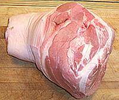
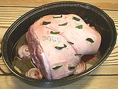
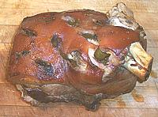

8
1/2
1/2
1-1/2
3
6
1
3
2
5
2
2
1/2
1/2
tt
|
#
t
t
t
cl
#
c
T
oz
oz
T
t
c
|
Pork Shoulder
Salt
Peppercorns cracked
Thyme dried
Garlic
Bay Leaf (1)
Onions
Marsala or (2)
Butter
Mushrooms (3)
Shallots
Parsley flat
Cornstarch
Cream, heavy
Salt & Pepper
-----------

Roast

Ready

Done
|
Prep - (35 min)
- Preheat Oven to 325°F/165°C.
- Crush Peppercorns, Salt and Thyme together
into powder.
- Cut the BAY LEAVES in half crosswise (
Note-1)
and slice each GARLIC CLOVE in thirds lengthwise.
- Peel ONIONS and cut into slices about 1/4" thick.
- Rinse and dry PORK SHOULDER. Make 12 evenly spaced slits
through the skin into the meat about 1-1/2" deep by 1-1/4" wide.
Stuff some of the Thyme Mix into each slit until it is all
used up. Insert a Bay Leaf half into each slit, and then a
slice of Garlic.
- Arrange Onion Slices in a coverable roasting pan
(Note-4) just big enough for the Pork
Shoulder, but make sure you have extra headroom because the roast
will expand some. Place the Pork Shoulder on the onions,
pour in the Wine (Note-2),
Run - (5 to 7 hrs, depending on size)
- Cover the pan and slide it into the oven. Let it roast, 4 to 5
hours for an 8# shoulder, depending if you want it sliceable or
pullable, 5 to 6 hours for a 10# shoulder. Internal temperature
should reach at least 165°F/75°C, but these times should
certainly get you there.
- Meanwhile: Slice MUSHROOMS crosswise in half
if large, then the other way fairly thin.
- Chop SHALLOTS fine. Chop PARSLEY medium. Mix,
- Heat BUTTER and fry Mushrooms gently until they show
a touch of browning, then add Shallot mix and fry stirring for
another 5 minutes. Set aside until the roast is done.
- When roast is done: remove from oven and, if the roast is
skin-on turn up the oven to 425°F/220°C (see below).
- Remove roast from pan. Best way is to put on a pair of best quality
heavy rubber dishwashing gloves (size extra large). That'll give you
time to just reach in, grasp the roast and hoist it out onto your
cutting board.
- pull Bay Leaves. Cut through the skin at the narrowest part and
peel it away in as close to a single sheet as you can manage. Remove
excess fat from the roast and cover it with foil to rest for at
least 20 minutes.
- Scrape excess fat from the skin, put the skin fat side down on a
sheet of foil. Roll the edges of the foil to contain released fat.
Slide the sheet into the oven and roast at 425°F until a bit
crispy but still flexible.
- While the skin is roasting, pour the liquid from the roasting pan
through a strainer into a pan. Squeeze as much liquid out of the
onions as you can and discard the onions. Skim the fat or, better,
use a gravy separator to remove it.
- Add defatted roasting liquid to the Mushroom mix and bring
to a simmer. This is already an intense sauce so rather than boil it
down I prefer to thicken it just a little. Mix the cornstarch with a
little water and stir in. Simmer until thickened but you don't want
it thickened much.
- Add the Cream and bring to a simmer. Check for salt, it
may not need any, and season to taste with salt and pepper. Keep
warm.
- Cut the crispy skin into 1/2" wide strips. Slice the pork roast and
serve with some sauce and a slice of the skin, with rice or potatoes
on the side.
|